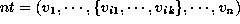
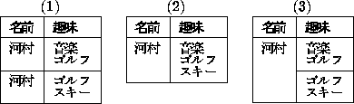
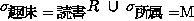
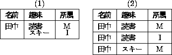

直観的にいえば、Kappa の意味論は、繰り返しを平坦に展開した場合と同じで ある。つまり非正規関係 NR にタプル

が含まれていると する。このとき、はNRと同じ意味を持っている。このように繰り返しを平坦にすることを、ア ンネスト (unnest) といい、逆の操作をネスト (nest) という。Kappa の意味 論はこの言葉を使えば、
Kappa の非正規関係の意味は、ネスト、アンネスト操作によって変わらない。ということができる。たとえば、表5の非正規関係は表 3と同じ意味である。つまりどちらの関係に対して問い合わせを出 しても同じ回答が返ってくることを Kappa は保証している。これは別の言い 方をすれば、関係モデルの素直な拡張となっており、処理・表現の双方におけ る効率を保証している。
この Kappa での意味論は、他の非正規関係モデルと必ずしも同じではない。
非正規関係の意味論によって問合せ結果がいかに異なるかを例で見てみよう。
たとえば表6 (1) を考えよう。その非正規関係にネスト操作を施す
と、Kappa や (INRIA で開発された) Verso では表-6 (2) が得ら
れるが、西独で開発されている DASDBS や AIP-P で採用されているいわゆる
NF モデルでは表6 (3) が得られる。
モデルでは表6 (3) が得られる。

別の例を考えよう。表7 (1) は非常に単純な非正規関係 (R) の 例である。

という操作を考えてみよう。Kappa では、表7 (2) の関係が得られ る。ネストすれば、属性 ``趣味'' と ``所属'' のどちらに注目するかで2つ の結果が得られる。これは ``スキー'' と ``I'' の組合せを除外したものと なっている。ところが Verso モデルでは、元の関係 (表7 (1)) が得られる。
このように、非正規関係では意味論をはっきり理解しておくことが非常に重要 である。